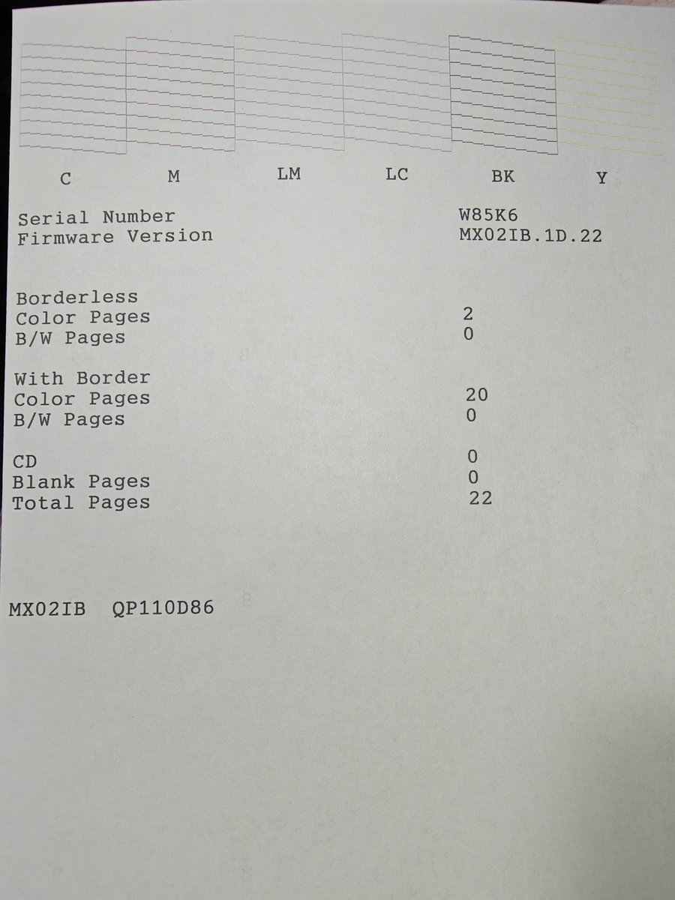

坏猫
@WorstCat
专业的宝宝就是厉害，一个小时就给我修好了。
原来有一种芯片叫做EPPROM阳寿很短，但是故意设计的使劲折磨它，用完不关机就会一直折磨它，过保就会坏掉，阳寿到了就会忘记自己是谁开不了机，破芯片只能重置一次，下次就得换主板得花好几百，怪我贪便宜1800买老型号。
再坏了就直接把它砍了吧｢(ﾟﾍﾟ)

坏猫
@WorstCat
家里打印机因为过保，被下病毒锁定不能用了，肯定是本地售后干的，怎么会有这么坏的人😡 https://t.co/fv9p8qJeYg